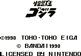
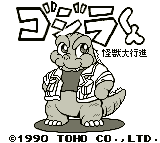

Gojira - Gameboy Games

Controls
- A button: Use Fire Breath
- B button: Punch
- Start: Pause
- Select: [not used]
Guide Godzilla as he rampages and destroys the ships, etc. that shoot at him. While on land, press
B + Left to perform a spinning tail attack.

Controls
- A button: [not used]
- B button: Punch
- Start: Pause
- Select: [not used]
You must guide a cute looking Godzilla (who looks remarkably similar to the main character from Bubble Bobble)
from stage to stage. Each puzzle seems to consist of dodging the creatures chasing you while trying to break or
position the rocks to solve the puzzle.
Anime Video Game Resource Center © 1998 by Luis A. Cruz